Efficient generation via sparse reference tokens.
Reference-based diffusion models enable highly controllable image generation by leveraging elements from input images to guide prompt-driven synthesis. However, these models are computationally expensive at runtime, and their cost scales severely with the number of input references. While efficiency has been extensively studied for prompt-driven generation, it remains largely under-explored for reference-based models. The dense representation of references as full spatial token grids is the primary source of this cost. We present Sparse Context, a method that constructs sparse reference representations by retaining only a small subset of tokens. Even without any retraining, dropping 80% of reference tokens largely preserves the coarse layout of generated scenes. To close the quality gap, we fine-tune the model with random token dropping at varying ratios — making it agnostic to which tokens are selected, enabling flexible task-aware token selection at inference without any additional training.
Most reference tokens are redundant.
Self-attention scales quadratically with token count — a severe bottleneck as references grow. But how many tokens do we actually need?
State-of-the-art reference-conditioned diffusion models tokenize each reference image via a VAE encoder, producing a dense spatial grid concatenated with noisy target tokens. In a simple inference-time experiment where we randomly drop a large fraction of reference tokens, even dropping 90% of the tokens the coarse image structure is still preserved — with changes only in the finer details.
Even dropping 90% of reference tokens at inference time still preserves the coarse scene layout — confirming that the vast majority of reference tokens carry redundant information.
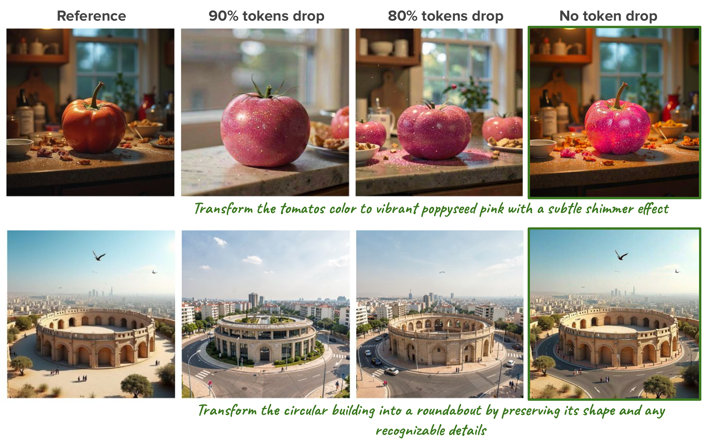
Efficient generation with sparse tokens
We adapt pretrained reference-conditioned image generators to accept a variable number of reference input tokens. Starting from FLUX-2-Klein-9B, we fine-tune with LoRA on a curated 63K-image dataset covering single-reference image editing, single-reference personalization, and multi-reference personalization. During training, we randomly drop f ∈ (0.75, 0.95) of the reference tokens, making the model robust across all sparsity levels without committing to any fixed budget at training time.
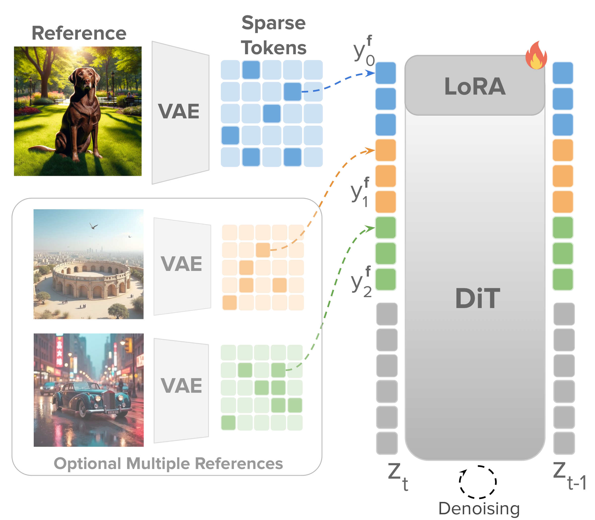
At inference, we encode the reference image(s) and select a subset of tokens as input to the generator. Because training was agnostic to which tokens are selected, any task-specific selection strategy plugs in without retraining. For instruction-driven image editing we use a Canny edge map to oversample tokens from structural boundaries; for subject personalization we use an image saliency map to concentrate the budget on identity-critical regions.
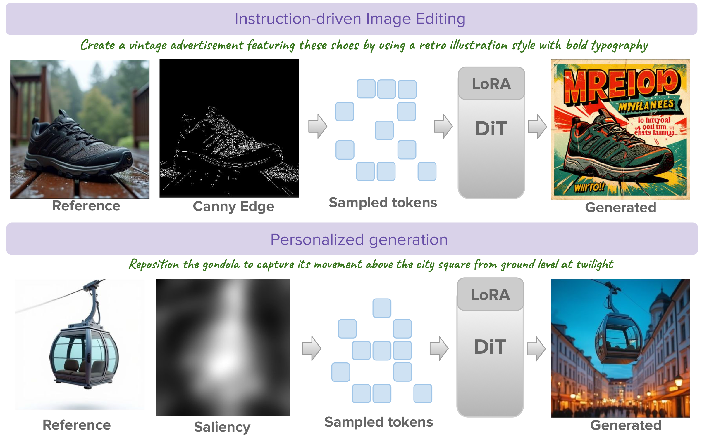
Efficient reference conditioned generation
Sparse Context preserves scene structure with only 10% of reference tokens while accurately applying instruction-driven edits. The Naïve baseline at the same budget corrupts scene identity.
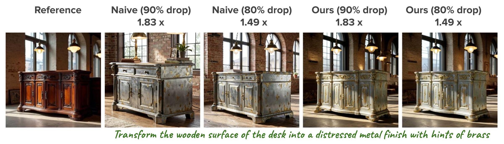
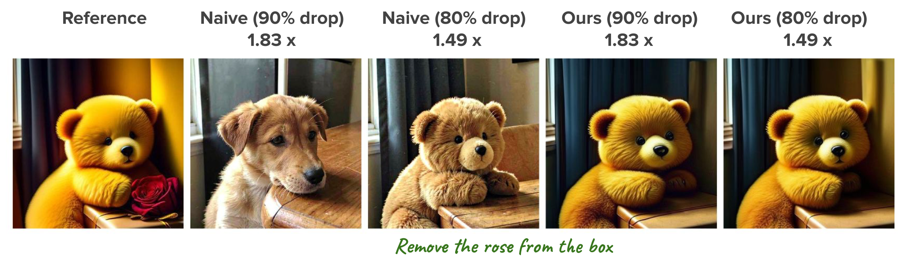
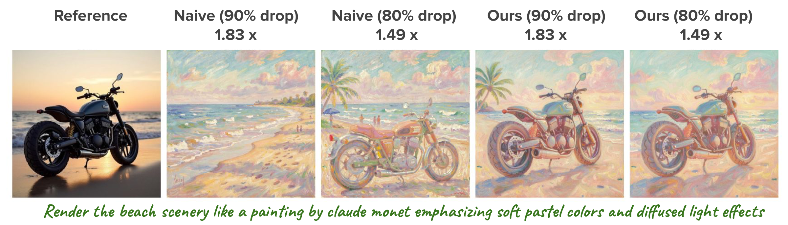
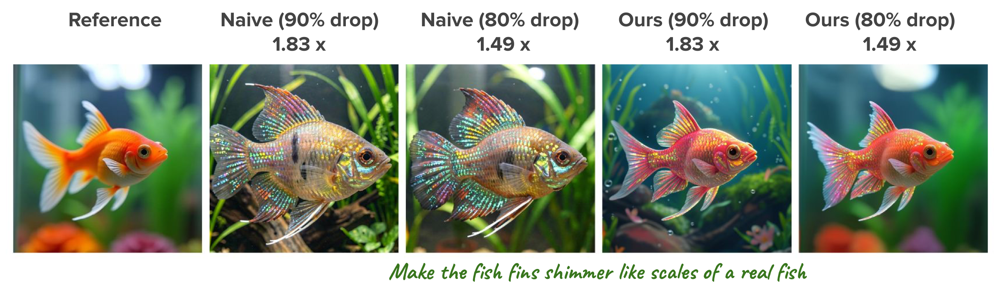
Saliency-guided sampling preserves fine-grained subject details — painting textures, jewels, vehicle outlines — even at 10% token retention, while integrating subjects naturally into new scenes.
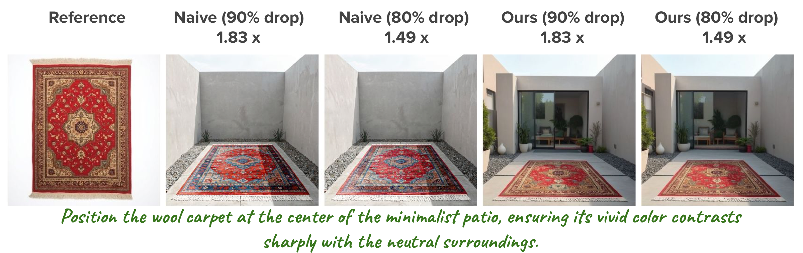
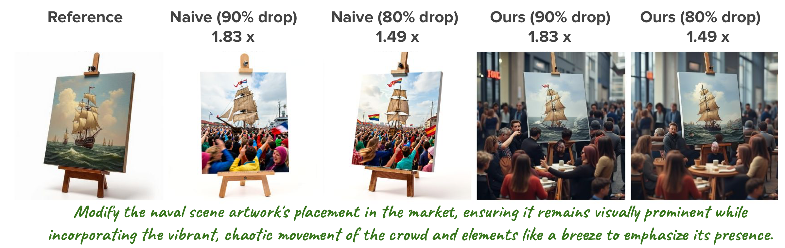
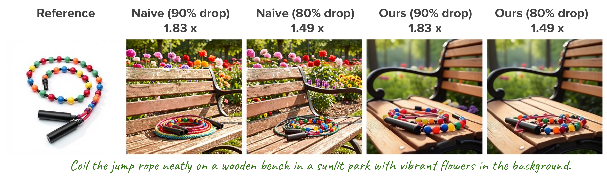
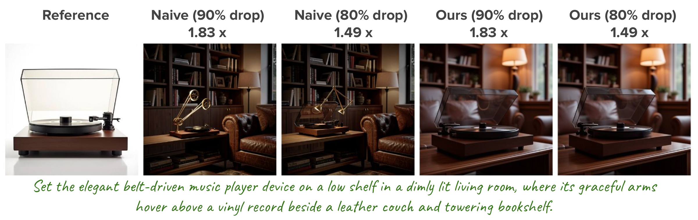
With 6 references, 86% of tokens are from reference images — making sparse conditioning especially effective. Efficiency gains scale directly with the number of references.
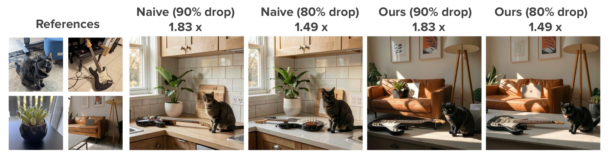
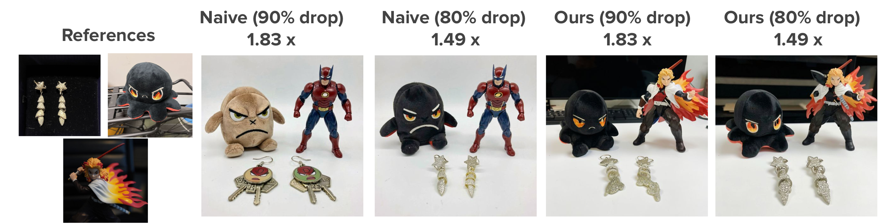
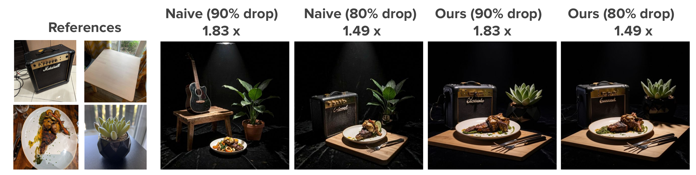
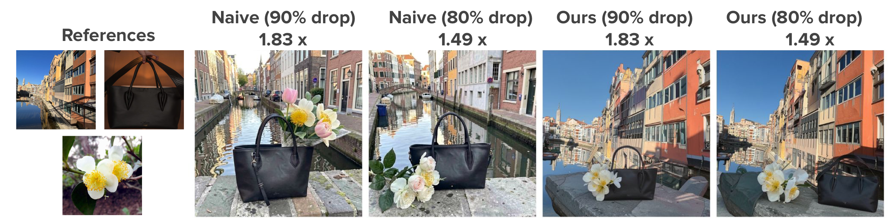
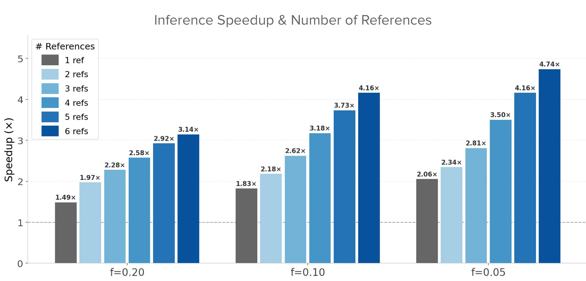
Compatible with other efficiency methods.
Sparse Context targets a complementary bottleneck — reducing token count per layer — while KV-caching reduces redundant computation across timesteps. The two methods are orthogonal and compose additively.
KV-caching reuses key-value pairs across denoising timesteps while Sparse Context reduces the reference token count itself. Combined, they reach 6.72× total speedup with 6 references at f = 0.10 — gains neither method achieves alone.
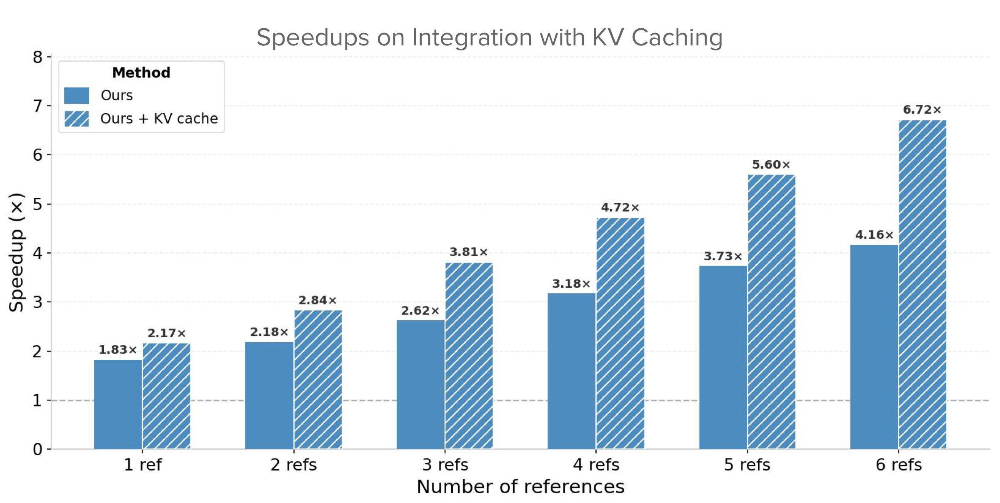
Cite this work.
@inproceedings{sparsecontext2026,
title = {Keep The Essentials: Efficient Reference Conditioned
Generation via Token Dropping},
author = {Parihar, Rishubh and Raina, Ayush and
Babu, R. Venkatesh and Patashnik, Or},
year = {2026},
note = {Under Review},
}